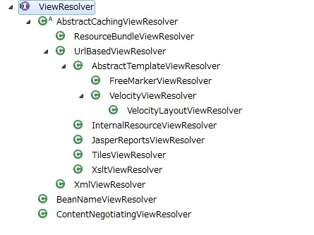

2.2. Spring MVCアーキテクチャ概要¶
目次
Spring MVCは、公式で以下のように説明されている。
Spring’s web MVC framework is, like many other web MVC frameworks, request-driven, designed around a central Servlet that dispatches requests to controllers and offers other functionality that facilitates the development of web applications. Spring’s DispatcherServlet however, does more than just that. It is completely integrated with the Spring IoC container and as such allows you to use every other feature that Spring has.
2.2.1. Overview of Spring MVC Processing Sequence¶
リクエストを受けてから、レスポンスを返すまでのSpring MVCの処理フローを、以下の図に示す。

- DispatcherServletが、リクエストを受け取る。
- DispatcherServletは、リクエスト処理を行うControllerの選択をHandlerMappingに委譲する。HandlerMappingは、リクエストURLにマッピングされているControllerを選定し（Choose Handler）、 ControllerをDispatcherServletへ返却する。
- DispatcherServlet は、Controllerのビジネスロジック処理の実行をHandlerAdapterに委譲する。
- HandlerAdapter は、Controllerのビジネスロジック処理を呼び出す。
- Controllerは、ビジネスロジックを実行し、処理結果をModelに設定し、ビューの論理名をHandlerAdapterに返却する。
- DispatcherServletは、ビュー名に対応するViewの解決を、ViewResolverに委譲する。ViewResolverは、ビュー名にマッピングされているViewを返却する。
- DispatcherServletは、返却されたViewにレンダリング処理を委譲する。
- Viewは、Modelの持つ情報をレンダリングしてレスポンスを返却する。
2.2.2. Implementations of each component¶
これまで説明したコンポーネントのうち、拡張可能なコンポーネントを紹介する。
2.2.2.1. Implementaion of HandlerMapping¶
Springから提供されているHandlerMappingのクラス階層を、以下に示す。

通常使用するのは、org.springframework.web.servlet.mvc.method.annotation.RequestMappingHandlerMappingである。
このクラスは、Bean定義されているContorllerから@RequestMappingアノテーションを読み取り、
URLと合致するControllerのメソッドをHandlerクラスとして扱うクラスである。
Spring3.1からは、RequestMappingHandlerMappingは、DispatcherServletが読み込むBean定義ファイルに、
<mvc:annotation-driven>の設定がある場合、デフォルトで設定される。
(<mvc:annotation-driven>アノテーションで有効になる設定は、Web MVC frameworkを参照されたい。)
2.2.2.2. Implementaion of HandlerAdapter¶
Springから提供されているHandlerAdapterのクラス階層を、以下に示す。

通常使用するのは、org.springframework.web.servlet.mvc.method.annotation.RequestMappingHandlerAdapterである。
このクラスは、HandlerMappingによって選択されたHandlerクラス(Controller)のメソッドを呼び出すクラスである。
このクラスもSpring3.1からは、<mvc:annotation-driven>の設定がある場合、デフォルトで設定される。
2.2.2.3. Implementaion of ViewResolver¶
Springおよび依存ライブラリから提供されているViewResolverのクラスを、以下に示す。

通常(JSPを使う場合)は、
- org.springframework.web.servlet.view.InternalResourceViewResolverを使用するが、
テンプレートエンジンTilesを使う場合は、
- org.springframework.web.servlet.view.tiles2.TilesViewResolver
ファイルダウンロード用にストリームを返す場合は
- org.springframework.web.servlet.view.BeanNameViewResolver
のように、返すViewによって使い分ける必要がある。
複数の種類のViewを扱う場合、ViewResolverの定義が複数必要となるケースがある。
複数のViewResolverを使う代表的な例として、ファイルのダウンロード処理が存在する画面アプリケーションが挙げられる。
画面(JSP)は、InternalResourceViewResolverでViewを解決し、
ファイルダウンロードは、BeanNameViewResolverなどを使ってViewを解決する。
詳細はファイルダウンロードを参照されたい。
2.2.2.4. Implementaion of View¶
Springおよび依存ライブラリから提供されているViewのクラスを、以下に示す。

Viewは、返したいレスポンスの種類によって変わる。
JSPを返す場合、org.springframework.web.servlet.view.JstlViewが使用される。
Springおよび依存ライブラリから提供されていないViewを扱いたい場合、Viewインタフェースを実装したクラスを拡張する必要がある。
詳細はファイルダウンロードを参照されたい。